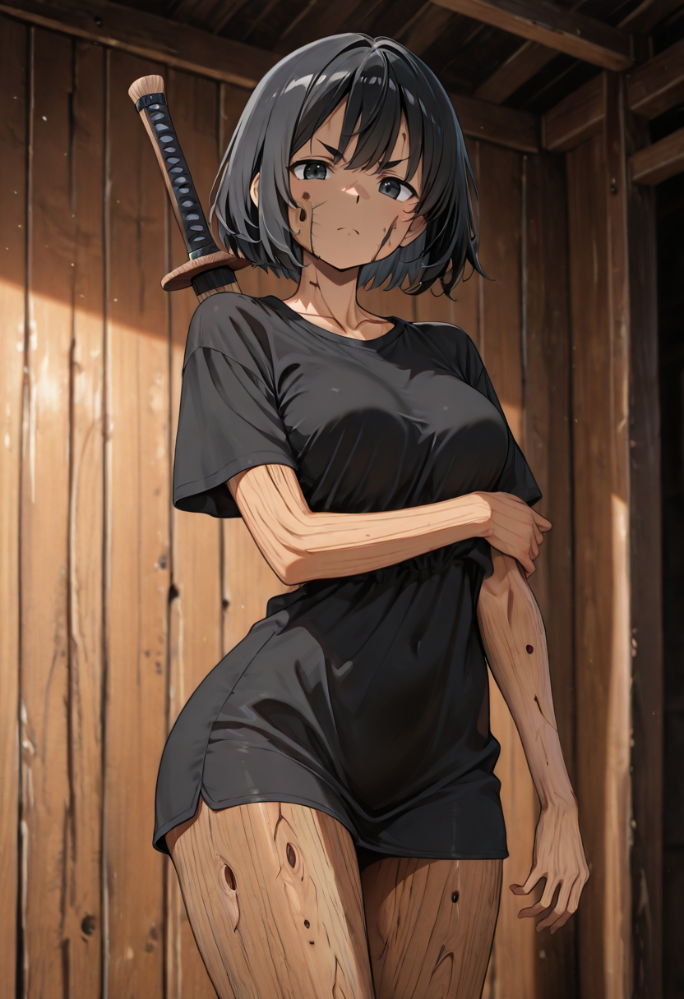
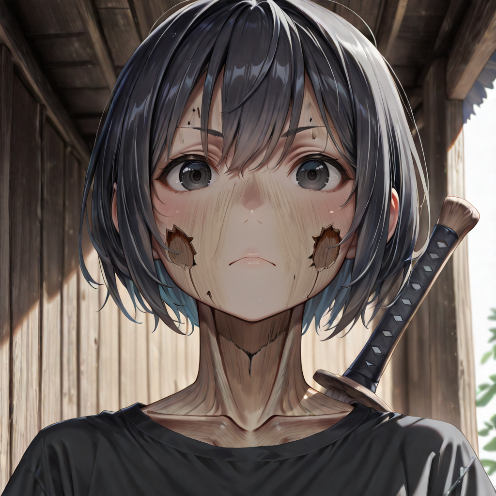
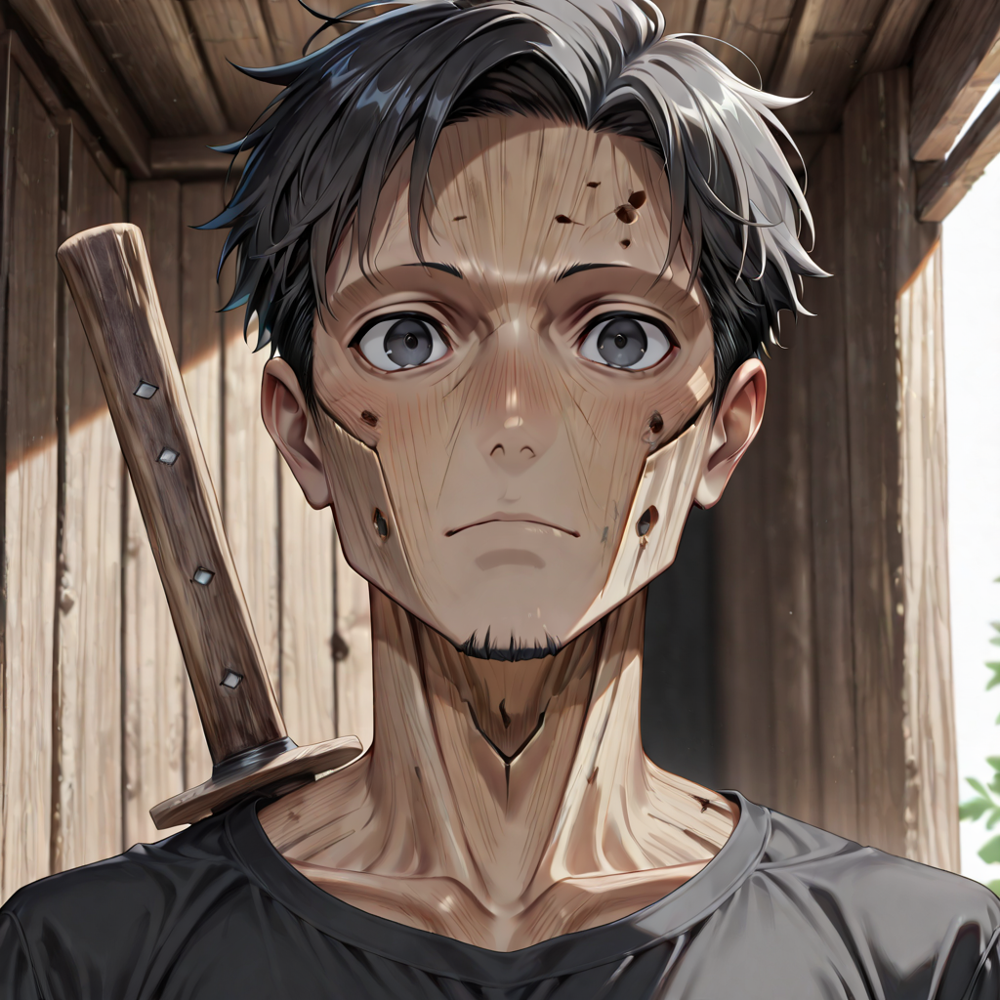

First Morning
The Ethereal Swordsman has just woken up. They have no memories yet , only sensations. The weight of the wooden sword Malicott placed in their hands. The smell of deep earth. The sound of other breathing, other footsteps, reassuring in the darkness of their first night.
Their bodies are still more ethereal than arboreal , translucent at the edges, as if they haven't fully decided to exist yet. When they move, they leave behind a faint trace of green light, a luminescent echo that fades within seconds. They are not yet dangerous. And they know it.
What makes them valuable is not power but speed and adaptability. They can cover ground that heavier units cannot, slip between gaps in enemy formations, and absorb pressure on behalf of units who matter more. They are the expendable, and they know that too , but in the Empire of the Forgotten, everyone has already been expendable once.
Tactical Data

Slash
Base AttackGallery

